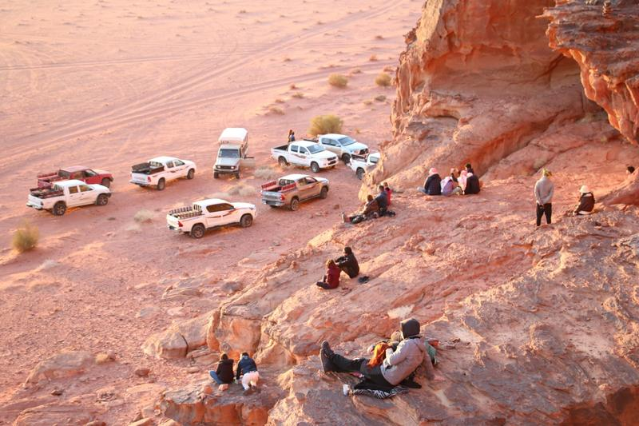
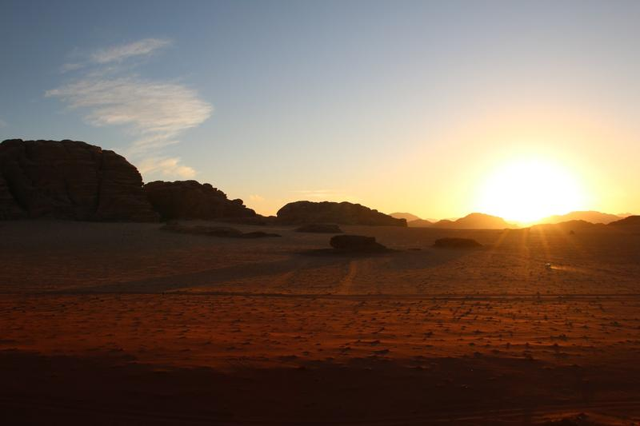
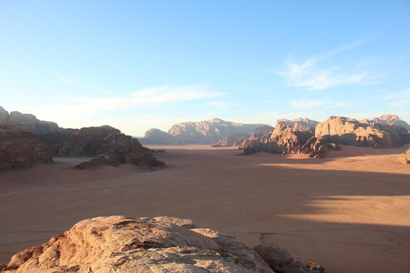
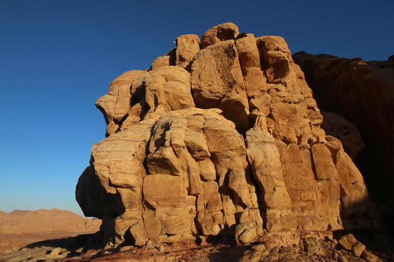
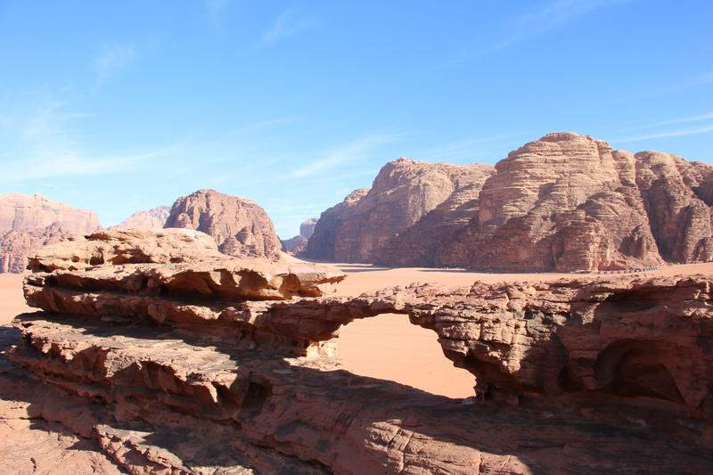
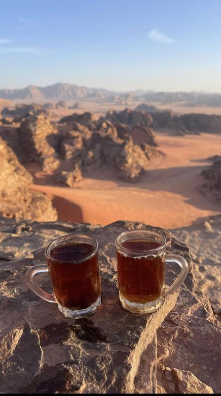
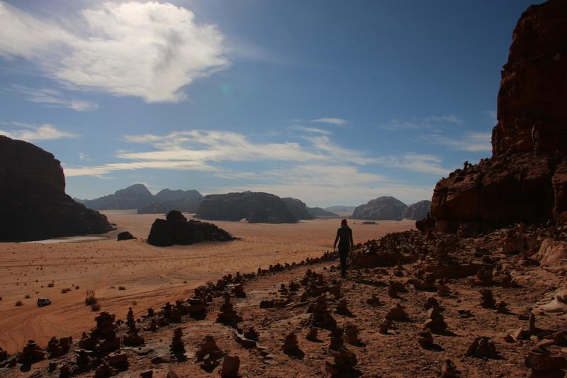
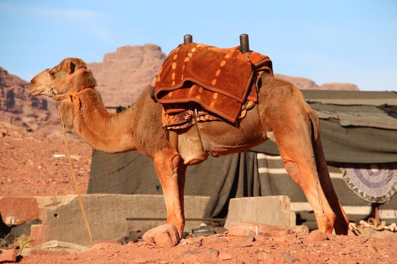
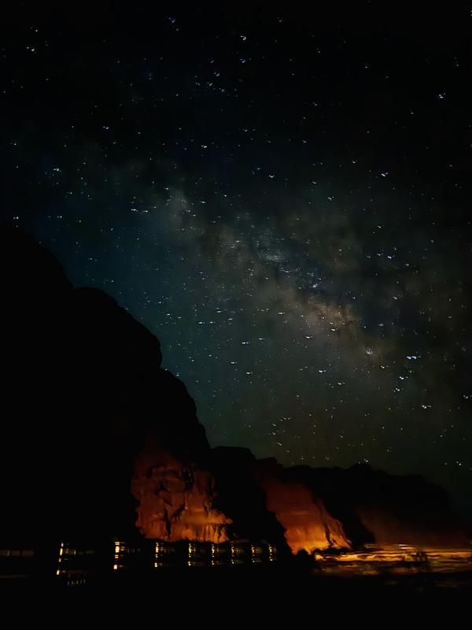

Tours in Wadi Rum
Ten programmes, from a short camel ride to two days in the mountains, plus custom trips. Prices are per person and drop as your group grows.
Jeep tours & overnight
جولات بالجيب ومبيتExplore Wadi Rum by 4x4 with a local Bedouin guide, then spend the night at our camp.

Full-Day Jeep Tour + Overnight
The complete Wadi Rum in one day: red dunes, canyons and viewpoints, with time to walk, climb and take photos.

Half-Day Jeep Tour + Overnight
An afternoon among Wadi Rum's best-known sights, then sunset, dinner and a night at camp.

3-Hour Jeep Tour + Overnight
Short on time? A 3-hour drive to some of the most beautiful places in the desert, with sunset, dinner and a night at camp.

White Desert Experience + Overnight
Leave the red sand behind for Wadi Rum's pale white desert, with its strange rock formations and quiet, open landscapes.
Mountains & hiking
جبال ومساراتFor walkers and climbers: rock bridges, summits and long trails between the mountains.

Jabal Burdah Adventure + Overnight
Drive and hike to Jabal Burdah and climb up to its famous rock bridge, high above the desert floor.

Umm ad Dami Adventure + Overnight
Climb Jabal Umm ad Dami, the highest mountain in Jordan at 1,854 m, with views across the desert in every direction.

Two-Day Desert Adventure
A full day by jeep and a long-distance hike on mountain trails such as Jabal Hash, with one night at camp and one under the stars.
Desert experiences
تجارب صحراويةShorter experiences on their own, or added to any tour.

Camel Ride
Travel the desert the way Bedouin families have for generations. Ride at sunrise, at sunset or at a time that suits you.

Stargazing Experience
Two hours in a quiet spot far from the camp lights, where the Milky Way stretches across the sky. Add it to any tour.
Hot Air Balloon Experience
Float over the desert at sunrise and see the mountains and dunes from above.
Multi-Adventure Desert Experience
Can't choose just one? Tell us how much time you have and what you'd like to do, and we'll build a programme for you: a jeep tour, long-distance hiking, mountain climbing, camel riding, sandboarding, or a mix of them all.